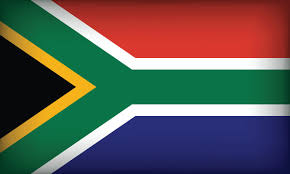

My name is Siyanda Mpofu but I go with Siya. I was in South Africa and I live with my family in Midrand. I am currently learning Software Development and Web Designing with BYU-idaho. I am 1 of 3 sons and also a twin. I love sports and learning new things.
South Africa
South Africa, officially the Republic of South Africa (RSA),is the southernmost country in Africa. Its nine provinces are bounded to the south by 2,798 kilometres (1,739 miles) of coastline that stretches along the South Atlantic and Indian Ocean; [14][15][16] to the north by the neighbouring countries of Namibia, Botswana, and Zimbabwe; to the east and northeast by Mozambique and Eswatini; and it encloses Lesotho.